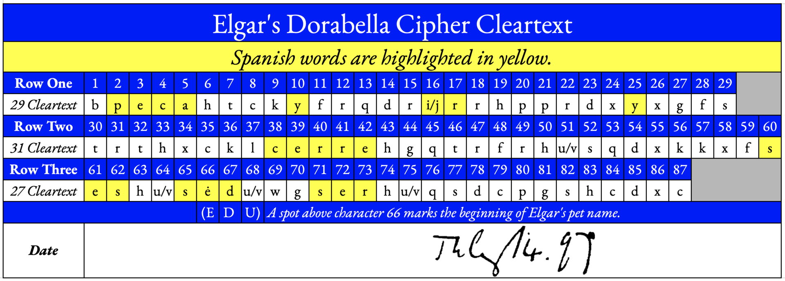
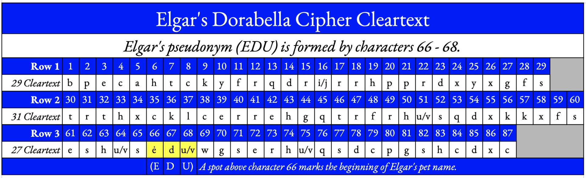

The published record
Every proposed solution, the computational studies, and why none of the claims has stuck.
Every one of the proposed solutions below is a claim. None has been independently reproduced, and several are mutually contradictory readings of the same 87 symbols. What computation has established is a different and much shorter list.
Proposed solutions
| proposer | year | method & result |
|---|---|---|
| Eric Sams | 1970 | Musicologist and Shakespeare scholar, in The Musical
Times. Read it as substitution plus phonetic shorthand, opening STARTS: LARKS! IT'S CHAOTIC, BUT A CLOAK OBSCURES MY NEW LETTERS…Expands 87 symbols to about 109 letters; the surplus is not accounted for, which is the standing objection. |
| Tim S. Roberts | — | Simple substitution with a key derived from a
phrase, giving P.S. Now droop beige weeds set in it – pure idiocy – one entire bed!…The output is not natural English on any reading. |
| Javier Atance | — | Non-textual: semicircle count gives a scale degree, orientation gives natural / flat / sharp. A music reading rather than a language one. |
| Richard Henderson | 2011 | Substitution with two null letters: whY AM I VERY SAD, BELLE. I SAG AS WE SEE ROSES DO. E.E. IS EVER FOND OF U, DORA. |
| Wayne Packwood | 2020 | In Musical Opinion: A WOMAN IS LIKE CHESS ONE HAS TO MAKE MANY SACRIFICES FOR ITS QUEEN, plus a secondary RATS. Involves rearrangement keyed to dots read as a conductor's baton; the rearrangement rule is not stated in a reproducible form. |
| Elgar Society competition | 2007 | Run for the 150th anniversary of Elgar's birth. The assessment was blunt: thoughtful entries, but results amounting to a disconnected chain of bizarre utterances drawn from arbitrary letter sequences. |
A pattern worth naming: at 87 characters, a search that is free to choose both a substitution and a rearrangement will produce English-looking output by chance. Several of the claims above have that shape. This is why my toolkit refuses to offer a joint substitution-plus-transposition search — a “solution” found that way is not evidence of anything.
Recent claims — and why they have not stuck
| claim | year | objection |
|---|---|---|
| Dan Bartlett | 2024 | Published a decryption on YouTube and Amazon. The plaintext contains DORABELLA — a nickname Elgar did not use until September 1898, fourteen months after this letter. Fatal on chronology alone. anachronism |
| Ian Menkins | 2024 | Reads the cipher as enciphered music, with an MP3 rendering, drawing a parallel to the 1886 Liszt fragment. Hauer et al.'s text-vs-music classifier favours natural language over music, and their perplexity work found music markedly harder to decipher — but the music branch is not closed. open |
| Wayne Packwood | 2020 | Requires a rearrangement keyed to dots read as a conductor's baton. The rearrangement rule is not stated reproducibly, so the result cannot be replayed by anyone else. not reproducible |
| Eric Sams | 1970 | The most serious attempt. Expands 87 symbols to roughly 109 letters via phonetic shorthand; the surplus is not accounted for, which makes it unfalsifiable as stated. unfalsifiable |
Robert Padgett's cleartext readings
Padgett publishes his readings as annotated cleartext tables. Two are on Wikimedia Commons: one highlights Spanish words in the cleartext (peca, y, ir, y, cerre, se, es, sed, ser), the other reads characters 66–68 as E D U — Elgar's pet name — starting at the dot.


Why I treat these as claims, not results. Finding short words of some language
somewhere in 87 letters of cleartext is what chance produces, and the more languages and word lengths you allow, the
more you find. My server hunt shows the effect with its own word watch: two sightings of AND where chance
alone predicts 4.23 ([09]). A hit only means something when it runs well above the
chance figure — and the cleartext still has to read as a whole.
What computation has established
Three independent computational studies now agree, and they agree with the result my own lab reproduces.
| study | year | finding |
|---|---|---|
| Hauer, Choi, Sundar, Hindle, Smallwood & Kondrak HistoCrypt, University of Alberta |
2021 | Ran substitution solvers, ciphertext language identification over 380 languages, and a text-vs-music classifier. Conclusions: the failure of several solvers suggests it is not a simple monoalphabetic substitution of English; the message is more likely natural language than music; the mirrored symbol pairs are unlikely to be chance, so it is probably not a hoax. Their language ranking put Latin first (Aceh second) and English third, though they argue for English on context. |
| Viktor Wase — Dorabella unMASCed Cryptologia |
2023 | The decisive framing: show the solver works at this length, then show it fails here. State-of-the-art algorithms solve 87-character substitution ciphers at a 98.7% decipher rate for English and 98.6% for Latin, yet fail on Dorabella. Conclusion: it is not an English or Latin monoalphabetic substitution cipher. tested |
| My lab | 2026 | Reached the same conclusion independently, by the same logic, before I found the Wase paper. With solver effort matched on both sides (100 restarts, 40 real-English controls), every reading order lands at the 0th percentile, z between −7.5 and −9.6, while the solver recovers a median of 87 of 87 letters on the controls. Separately, a key-free test rules out a regular rotating key at p = 0.0003 ([07]). tested |
Alternative transcriptions
Independent transcribers disagree, and the disagreement is real rather than careless — everyone is reading a 1937 halftone, not the original. Either can be pasted into the decipher tool to attack it directly.
| source | plaintext under its own proposed key |
|---|---|
| Elgar's notebook key the standard reading, as printed by the Cipher Foundation |
BLTACEIARWUNISNFNNELLHSYWYDUO INIEYARQATNNTEDMINUNEHOMSYRRYUO TOEHOTSHGDOTNEHMOSALDOEADYA |
| benzedrine.ch a different 24-symbol key, which the page itself calls arbitrary |
BPECAHTCKYFRQDRIRRHPPRDXYXGFS TRTHTCKLCERREHGQTRFRHUSQDXKKXFS ESHUSEDUWGSERHUQSDCPGSHCDXC |
Both are gibberish, which is the point: two independent keys, two different nonsense strings, same 87 symbols. benzedrine.ch pairs I with J and U with V — a 24-letter Latin-style alphabet, which is one concrete way a 24-cell key can cover 26 letters.
What is still genuinely open
- Is the plaintext English at all? Two studies rank Latin above it on letter statistics. Elgar had no Latin scholarship to speak of, but he set Catholic liturgical texts and the ranking is not nothing.
- Is it a private shorthand? Sams's phonetic reading is unfalsifiable as stated, but the underlying idea — that Elgar wrote compressed, personal, half-phonetic English — would explain both the English-shaped letter frequencies and the failure of every n-gram attack.
- Is there a second layer? English-shaped frequencies with a failed n-gram fit is the signature of a transposition sitting on top of a substitution. Undecidable at 87 characters, which is the whole difficulty.
- What is the dot for? Nobody knows.
- Was it ever meant to be readable? Dora knew Elgar well and could not read it. If it depended on a shared private joke rather than a system, it may have died with the two of them.
Sources for this page
Wikipedia — Dorabella Cipher · Cipher Mysteries — Dorabella · Cipher Mysteries — 2025 update · The Cipher Foundation · Hauer et al., HistoCrypt 2021 (PDF) · Wase, Dorabella unMASCed, Cryptologia 2023 · Eric Sams — Elgar's Cipher Letter to Dorabella · benzedrine.ch — clues or red herrings · Dorabella Cipher as Musical Inspiration (arXiv)